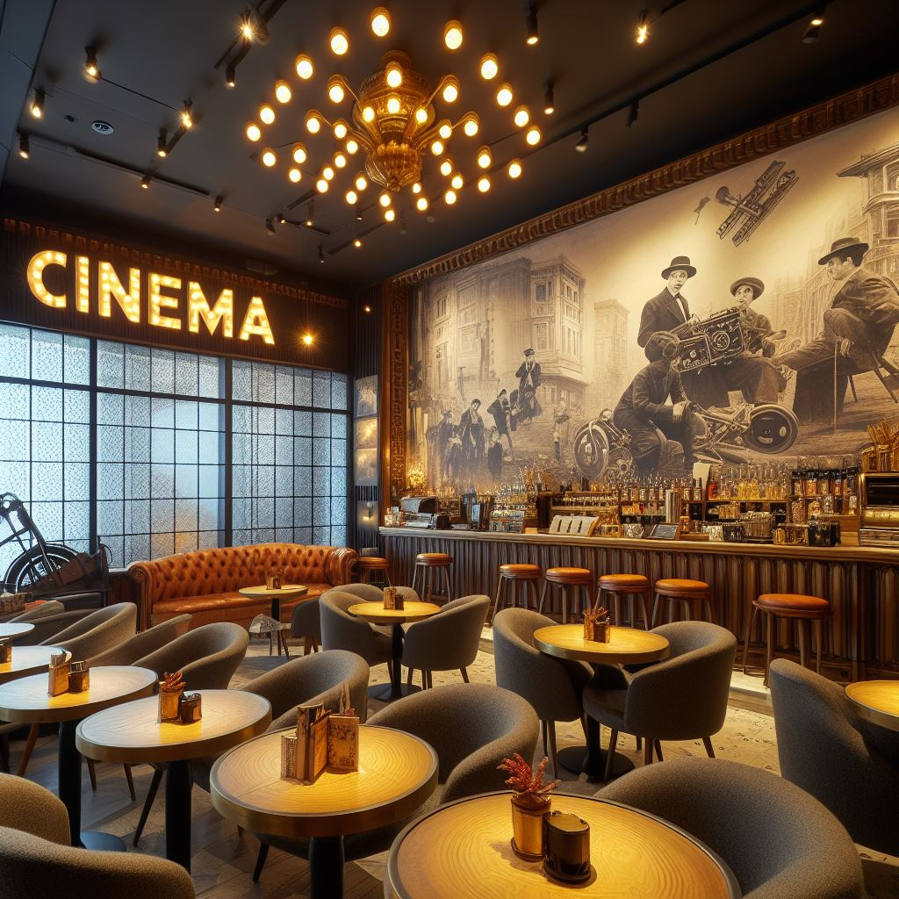

El Salón de la Fama
¡Disfruta de una comida de estrella en nuestra cafetería temática! El Salón de la Fama ofrece una experiencia gastronómica única, con aperitivos inspirados en tus películas favoritas y un ambiente elegante y acogedor. ¡No te pierdas nuestra oferta de cafés y cócteles de cine!
Hollywood